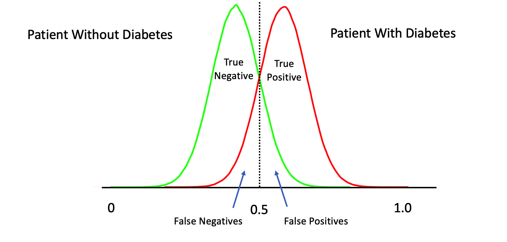
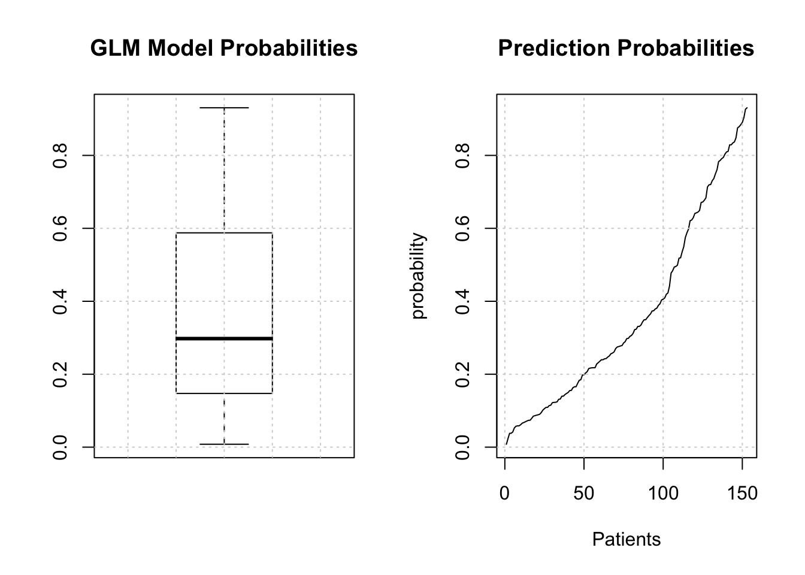
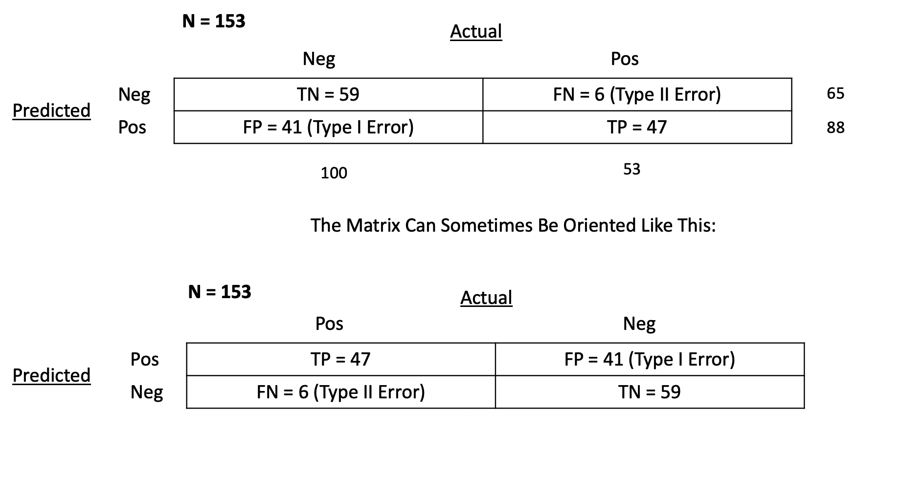
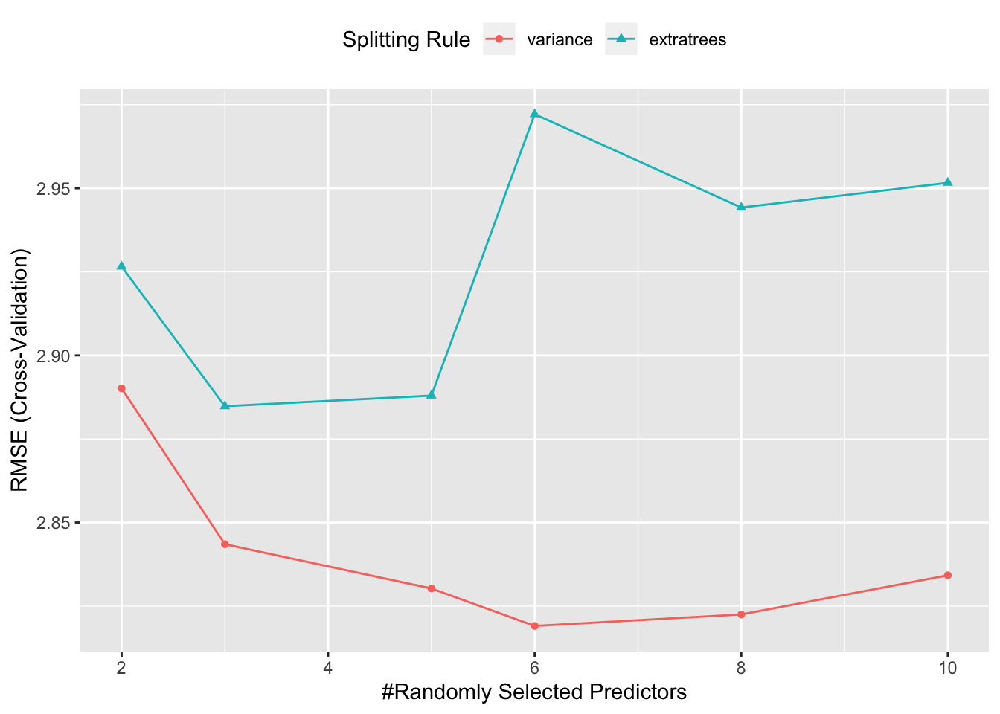
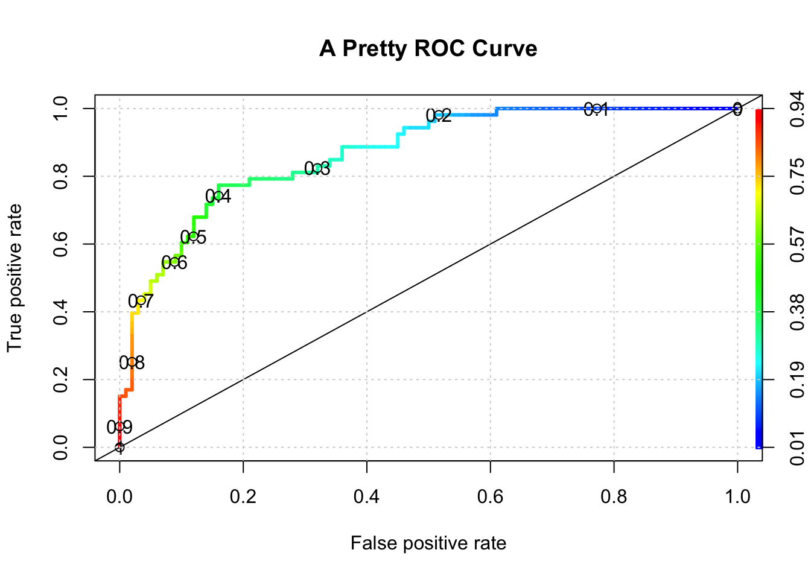

Chapter 6 Classification Problems
Next up we consider the issue of building a model to predict a binary (e.g. “yes” / “no” or “positive /”negative“) outcome although we might also predict more than one class. For the sake of explanation we’ll keep our attention to the”two class" situation.
6.1 Performance Measures
With Linear Regression we were predicting a continuous outcome with the goal of being able to minimize the RMSE (root mean square error). In classification problems we need a metric or “performance measure” that we can use to judge the effectiveness of any model we create.
As an example, we’ll spend some time with the PimaIndiansDiabetes dataframe that is part of the mlbench package. You can install this package via the Tools -> Install Package menu item within RStudio or type the following at the R console prompt:
Once you have it installed then load it into the work space as follows:
The description of the data set is as follows:

So we now have some data on which we can build a model. Specifically, there is a variable in the data called “diabetes” which indicates the disease / diabetes status (“pos” or “neg”) of the person. It would be good to come up with a model that we could use with incoming data to determine if someone has diabetes.
6.2 Important Terminology
In predictive modeling there are some common terms to consider:

6.3 A Basic Model
Since we are attempting to predict a binary outcome here (“pos” or “neg”) we’ll need to use something other than linear regression which is used to predict numeric outcomes. We’ll go with Logistic Regression as it is a tried and true method for doing this type of thing.
Let’s use the native glm function to do this since it will motivate some important concepts. We’ll split the data into a train / test pair using the createDataPartition function from caret. We’ll go with an 80% / 20% split. You’ve seen this before with the linear modelling examples.

set.seed(891)
idx <- createDataPartition(pm$diabetes, p=.80, list=FALSE)
glm_train <- pm[idx,]
glm_test <- pm[-idx,]
glm_model <- glm(diabetes ~ .,
data = glm_train,
family = "binomial")
# Next well make some predictions using the test data
glm_preds <- predict(glm_model,glm_test,type="response")
glm_preds[1:10]## 2 6 8 22 23 30
## 0.05836318 0.15559574 0.67209318 0.31189099 0.93064630 0.27846273
## 33 36 38 40
## 0.05726965 0.14730284 0.39319711 0.53563224What do we get back from our prediction ? These are probabilities that, for each row in the test data frame, represent the likelihood of that person being positive for diabetes. The trick then is to figure out the threshold value (aka “alpha value”) over which we would classify the person as being positive for diabetes.
To answer this question, we need to back up a bit and recall that we are dealing with a curve like the one below which is a sigmoid function. The idea is to take our probabilities, which range between 0 and 1, and then pick a threshold over which we would classify that person as being positive for diabetes.
6.4 Selecting The Correct Alpha
The temptation is to select 0.5 as the threshold such that if a returned probability exceeds 0.5 then we classify the associated subject as being “positive” for the disease. But then this assumes that the probabilities are distributed accordingly. This is frequently not the case though it doesn’t stop people from using 0.5. Here is another view of the situation.

The above represents a perfect classififier wherein we can cleanly distinguish between True Positives and Negatives. Note that, the cutoff point is at 0.5 which represents an ideal case. However, in most situations, what we have is something like this:

We might first wish to look at the distribution of the returned probabilities before making a decision about where to set the threshold. You should now be able to clearly that simply selecting 0.5 in a general case might not be the best approach.

The median is somewhere around .25 so we could use that for now although we are just guessing.
glm_label_preds <- ifelse(glm_preds > 0.25,"pos","neg")
# We have to make the labels into a factor since
# the diabetes column is a factor in the original data dset
glm_label_preds <- factor(glm_label_preds,
levels = levels(glm_test[["diabetes"]]))
glm_label_preds[1:10]## 2 6 8 22 23 30 33 36 38 40
## neg neg pos pos pos pos neg neg pos pos
## Levels: neg pos6.5 Hypothesis Testing
Now, before we dig into the details our classifier, remember that most things in statistics and classification revolves around the idea of a hypothesis. In this case, the “null” hypothesis is that a patient does NOT have the disease whereas the alternative hypothesis is that they do. Well, for a statistician that’s a bit strong. Let’s just say that if there is enough evidence to reject the null hypothesis then we will.
Anyway, the larger idea is that we might apply our test to someone and subsequently determine that they have a disease when in fact they don’t. This would be an example of a “false positive” also known as a “Type I Error”. It is also possible that we apply the test to someone and we say that the do not have the disease when they actually do. This is known as a “false negative” also known as a Type II Error" wherein we fail to reject the null hypothesis for this person. A perfect test would have zero false positives and zero false negatives
6.6 Confusion Matrix
So now we have our predictions in terms of actual labels that we could then use to compare to the actual labels that are stored in the “diabetes” column of the test data frame. This table provides the basis for computing a number of performance measures such as accuracy, precision, sensitivity, specificity and others. In predictive modeling we are always interested in how well any given model will perform on “new” data.
# How does this compare to the truth ?
my_confusion <- table(predicted = glm_label_preds,
actual = glm_test$diabetes)Let’s break this down since it is really important to know how to use this construct. First, we notice that there are N = 153 people in this study.

True Positives - With respect to the second row - we predicted that 47 people have the disease that actually do have it. You could then say that the number of TRUE POSITIVES (abbreviated as “TP”) is 47.
False Positives - We also predicted that 37 people have the condition when they in fact do not. We could then say that the number of FALSE POSITIVES, abbreviated as “FP”, is 37.
False Negatives - In the first row we predicted that 6 people do NOT have the disease/condition when they actually do. So you could say that the number of FALSE NEGATIVES (abbreviated as FN) is 6.
True Negatives - We also predicted that 63 people do not have the condition and they do not. So then the number of TRUE NEGATIVES (abbreviated as TN) is also 63.
6.6.1 Computing Performance Metrics
Now comes the fun part in that you might be concerned with specific metrics to assess the quality of your model in specific terms. Since our model, such as it is, seems to relate to the quality of a medical diagnostic we might be concerned with its accuracy, precision, and sensitivity. The first two terms in particular are frequently used synonymously when they are not the same thing. Remember that we have N = 20 patients. Below is a graphic from Wikipedia which presents many (if not all) of the metrics that can be computed against a confusion matrix.

We’ll focus on some specific metrics as they will assist our understanding of how to assess a model.
## actual
## predicted neg pos
## neg 59 6
## pos 41 47## [1] 1536.6.1.1 Accuracy
So let’s take the number of observed True Positives and True Negatives, add them together, and divide them by the total number of patients in the study group to arrive at what is known as the Accuracy of our model. Another way to think of the denominator is as the sum of all observed results, True and False.
Accuracy = (TP + TN) / (TP + TN + FP + FN) = (63 + 47)/153 = 0. 0.72
## [1] 0.696.6.1.2 Precision
How precise is the model ? This is also known as Positive Predictive Value. We take the number of True Posties (TP) and divide that by the sum of True Positives (TP) and False Positives (FP). The denominator is the sum of row 2 in our matrix.
Precision = TP / (TP + FP) = 47 / (47 + 37) = 0.5
## [1] 0.53It is helpful to know that Precision is also known as the PPV “Positive Predictive Value” since it is concerned with the ratio of True Positives over the sum of all Positive related quantities including the False Positives. The larger the number of FP then the smaller the ratio which results in a lower precision.
6.6.1.3 Sensitivity
Sensitivity is related to Precision except the ratio we look at is the number of True Positives (TP) divided by the sum of True Positives and False Negatives (which are actually Positives). This tells us how frequently we find a positive case given that it is actually positive.
Sensitivity = TP / (TP + FN) = 47 / (47 + 6) = 0.89
## [1] 0.89Sensitivity also has synonyms: recall, hit rate, or True Positive Rate (TPR). For example, the concept of True Positive Rate might be more intuitive for you to understand although scientific medical literature might reference Sensitivity.
6.6.1.4 Specificity
Specificity tells us how frequently we find a negative case given that it is actually negative. This is also known as the “True Negative Rate”
Specificity = TN / (TN + FP) = 63 / (63 + 37) = 0.63
specificity <- my_confusion[1,1] / (my_confusion[1,1]+ my_confusion[2,1])
(specificity %>% round(.,2))## [1] 0.596.6.1.5 False Positive Rate
We compute the FPR as follows:
False Positive Rate = FP / (FP + TN) = 37 / (37 + 63) = .37
## [1] 0.416.7 Picking the Right Metric
There are more ratios we could compute some of which might be more relevant to our classification issue. In reality, picking the “right” metric is a function of your domain of study. Frequently, the sensitivity and specificity are used in medical testing scenarios as is the false positive rate. But you should search the literature in your area of interest to determine what is commonly used. We could say much more about these metrics but we’ll keep it simple for now.
6.8 Wait. Where Are We ?
We’ve been doing a lot. We did the following:
- Built a model against the training data
- Used the model to make a prediction against the test data
- Took the probabilities from Step #2 and
- Selected a threshold / alpha value (e.g. .3) and
- Decided that probabilities over that threshold would be “pos”
- Created a table of outcomes (confusion matrix) to compare predictions vs reality
- Computed some important ratios
While this process was useful the resulting confusion matrix corresponded to just one specific value of alpha. What if we had picked another value of alpha ? We would then get a different confusion matrix as well as different performance measures. In effect we would have to repeat steps 1-6 all over again !!!
Let’s find a way to generalize these steps. First, let’s create a function that allows us to compute the True Positive Rate (aka “Sensitivity”) and the False Positive Rate ( 1 - Specificity). If we apply it to our predictions from our example in progress, the output would be as follows.
get_tprfpr <- function(pred,true) {
myt <- table(pred,true)
tpr <- myt[2,2]/(myt[2,2]+myt[1,2])
fpr <- myt[2,1] / (myt[2,1] + myt[1,1])
return(c(tpr=tpr,fpr=fpr))
}
get_tprfpr(glm_label_preds,glm_test$diabetes)## tpr fpr
## 0.8867925 0.4100000We could now use this function to compute these metrics for any set of predictions vs outcomes. We could generalize this function to accept an alpha so we could explore the full probability domain (0 - 1) and then plot the TPR vs FPR. This is, in effect, creating something known as a ROC Curve aka Receiver Operating Characteristic Curve.
get_tprfpr <- function(thresh=.25,probs=glm_preds) {
diabetes <- ifelse(probs > thresh,"pos","neg")
myt <- table(diabetes,glm_test$diabetes)
tpr <- myt[2,2]/(myt[2,2]+myt[1,2])
fpr <- myt[2,1] / (myt[2,1] + myt[1,1])
return(c(tpr=tpr,fpr=fpr,alpha=thresh))
}Let’s look at a sequence of alpha values:
metrics <- t(sapply(seq(0.01,.95,.09),function(x) get_tprfpr(x)))
plot(tpr~fpr,metrics,
ylim=c(0,1),xlim=c(0,1),
main="Steve's Super Cool ROC Curve",
xlab="False Positve Rate (1-Specificity)",
ylab="True Positive Rate",type="l")
grid()
abline(a=0, b=1,lty=2)
# Put the associated threshold values on the plot to help you identify
# the right value to maximize the AUC (Area Under Curve)
text(metrics[,2],metrics[,1],labels=metrics[,3],cex=0.8)
It turns out that area under an ROC curve is a measure of the usefulness of a test in general, where a greater area means a more useful test. Ideally we would want the area under the curve (also known as “AUC”) to be as close to 1 as possible. The dashed line above represents a classifier that basically “guesses” the outcome (pos vs neg) using a “coin flip” mentality. So, our classifier does much better than that but certainly not perfectly. Now, we also care about the threshold that gives us a good balance between the TPR and FPR. I mean if we wanted a max AUC with no other concerns, we would also be accepting a very high FPR. So this is why looking at the curve is useful.
6.9 Better Ways To Compute The ROC Curve
So by now your head might be reeling from all the details and tedium associated with selecting alpha values, computing matrices, and plotting ROC curves though I it should be no surprise that R (as well as Python) has a number of functions that can compute these things for you. As an example, if we wanted to plot the ROC curve we generated by hand we could use the ROCR package. It takes the probabilities returned by our first prediction object as well as the known labels in the glm_test data frame.
library(ROCR)
pred <- ROCR::prediction(predictions = glm_preds,
labels = glm_test$diabetes)
perf <- ROCR::performance(pred,
"tpr",
"fpr")
ROCR::plot(perf,colorize=T,
print.cutoffs.at=seq(0,1,by=0.1),
lwd=3,las=1,main="Another ROC Curve")
abline(a = 0, b = 1)
grid()
# Get the optimal AUC
auc_ROCR <- ROCR::performance(pred,measure="auc")
auc_ROCR <- auc_ROCR@y.values[[1]]
cat("Optimal AUC is: ",auc_ROCR,"\n")## Optimal AUC is: 0.8677358And id we wanted to see the auc associated with the “optimal” alpha we could use some functions to get that for us:
pm_model_glm_probs <- predict(glm_model,glm_test,type="response")
myRoc <- pROC::roc(diabetes~pm_model_glm_probs,auc=TRUE,data=glm_test)
pROC::coords(myRoc, "best", ret = "threshold",transpose = TRUE)## threshold
## 0.3850002## tpr fpr alpha
## 0.9433962 0.4600000 0.2246862And while I’m at it, I might as well show you how easy it is to compute a confusion matrix which we did by hand earlier. Remember that we create a table called my_confusion
# How does this compare to the truth ?
my_confusion <- table(predicted = glm_label_preds,
actual = glm_test$diabetes)We could use a function from the caret package called confusionMatrix to show us the relevant metrics. Much better than doing it by hand.
## Confusion Matrix and Statistics
##
## actual
## predicted neg pos
## neg 59 6
## pos 41 47
##
## Accuracy : 0.6928
## 95% CI : (0.6132, 0.7648)
## No Information Rate : 0.6536
## P-Value [Acc > NIR] : 0.1753
##
## Kappa : 0.4127
##
## Mcnemar's Test P-Value : 7.071e-07
##
## Sensitivity : 0.8868
## Specificity : 0.5900
## Pos Pred Value : 0.5341
## Neg Pred Value : 0.9077
## Prevalence : 0.3464
## Detection Rate : 0.3072
## Detection Prevalence : 0.5752
## Balanced Accuracy : 0.7384
##
## 'Positive' Class : pos
## We could also work directly with our labelled predictions and known labels.
## Confusion Matrix and Statistics
##
## Reference
## Prediction neg pos
## neg 59 6
## pos 41 47
##
## Accuracy : 0.6928
## 95% CI : (0.6132, 0.7648)
## No Information Rate : 0.6536
## P-Value [Acc > NIR] : 0.1753
##
## Kappa : 0.4127
##
## Mcnemar's Test P-Value : 7.071e-07
##
## Sensitivity : 0.8868
## Specificity : 0.5900
## Pos Pred Value : 0.5341
## Neg Pred Value : 0.9077
## Prevalence : 0.3464
## Detection Rate : 0.3072
## Detection Prevalence : 0.5752
## Balanced Accuracy : 0.7384
##
## 'Positive' Class : pos
##